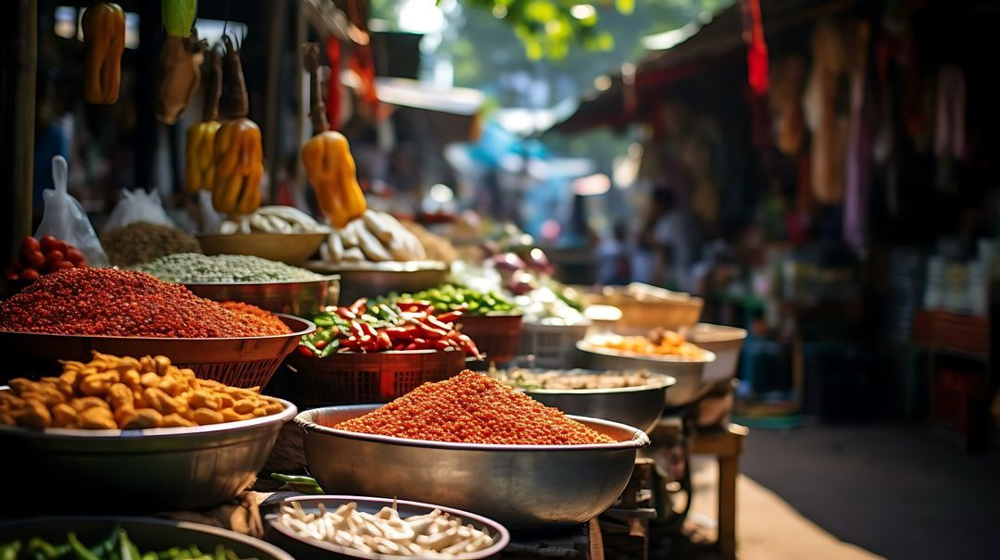
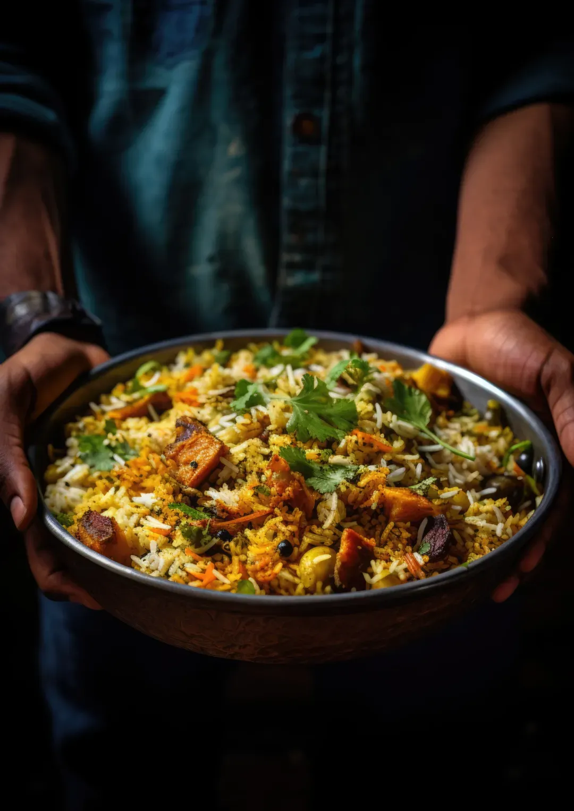
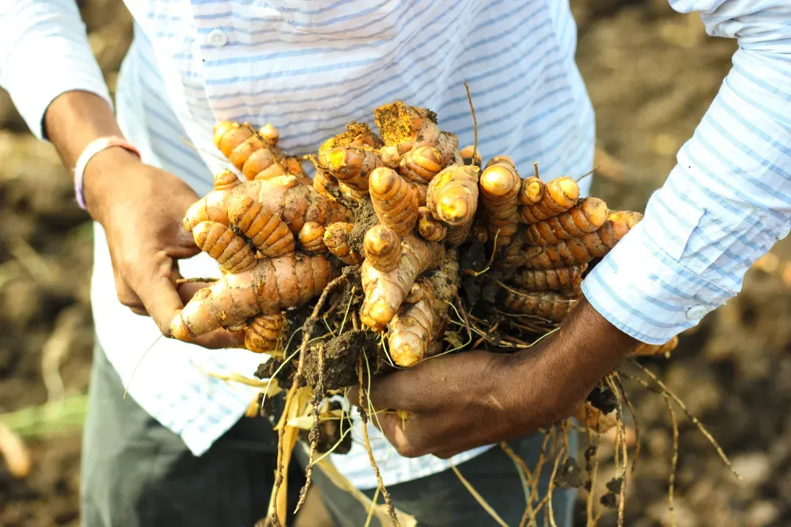
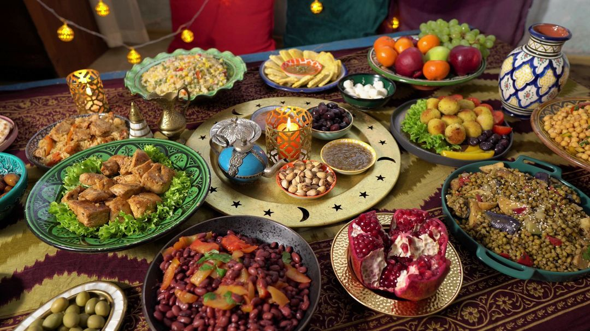

It began with a simple question
Why weren't the flavors we craved in our own kitchen cabinets? So we went looking — across markets, souks and family farms around the world.
Every great adventure begins with a simple question. Ours started around the family table, wondering why the flavors that transport you to Bangkok street markets, Moroccan souks and Mexican haciendas weren’t in our own kitchen cabinets. So we set out across the globe to find them, and to bring that authentic, home-cooked magic to your table.
How People of Spice came to be
-
Chapter 01 · The question
The Missing Flavor
We were home cooks chasing flavor — searching store shelves for spices that could recreate the dishes our grandmothers made, the meals we discovered while traveling, the recipes that turn a simple dinner into a memory. But something was always missing: the authentic taste, the soul of the dish, lost somewhere between the source and the supermarket.
-

Chapter 02 · The searchJourney to the Source
So we stopped searching and started sourcing. We traced curry powders back to Thai markets, ras el hanout to Moroccan spice merchants and guacamole seasonings to family farms in Mexico — learning from local cooks, street vendors and grandmothers who held centuries of flavor in their hands.
-


Chapter 03 · The momentThe Revelation
Everything changed with one taste: a dish made with spices from their true home, blended the way they were meant to be. The depth, the complexity, a kitchen that smelled like someone's beloved kitchen thousands of miles away. These weren't just ingredients. They were stories, traditions and family dinners waiting to happen.
-

Chapter 04 · TodayBringing It Home
Today People of Spice brings 44 blends from 22 cooking traditions to your cabinet, each crafted to capture the soul of its origin — Thai curry that tastes like Bangkok, tagine that carries you to Tangier, guacamole with the warmth of a Mexican hacienda. Because every family deserves to taste the real thing.
Bring the world to your table
The journey continues in your kitchen. Start with the jar that matches tonight’s dinner — every one comes with a recipe.
Or find something to cook tonight